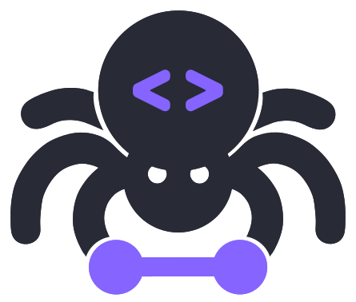

前几日分享了实验 | 使用本地大模型从文本中提取结构化信息, 今天再分享一个 ScrapeGraphAI库， 现在还不太好用，但未来写爬虫很可能会变得越来越容易。
一、介绍
ScrapeGraphAI是一个网络爬虫 Python 库，使用大型语言模型和直接图逻辑为网站和本地文档（XML，HTML，JSON 等）创建爬取管道。
只需告诉库您想提取哪些信息，它将为您完成！

scrapegraphai有三种主要的爬取管道可用于从网站（或本地文件）提取信息：
SmartScraperGraph: 单页爬虫，只需用户提示和输入源；SearchGraph: 多页爬虫，从搜索引擎的前 n 个搜索结果中提取信息；SpeechGraph: 单页爬虫，从网站提取信息并生成音频文件。SmartScraperMultiGraph: 多页爬虫，给定一个提示 可以通过 API 使用不同的 LLM，如 OpenAI，Groq，Azure 和 Gemini，或者使用 Ollama 的本地模型。
二、准备工作
12.1 安装ollama
点击前往网站 https://ollama.com/ ，下载ollama软件，支持win、Mac、linux

2.2 下载LLM
ollama软件目前支持多种大模型， 如阿里的（qwen、qwen2）、meta的(llama3)，

以llama3为例，根据自己电脑显存性能， 选择适宜的版本。如果不知道选什么，那就试着安装，不合适不能用再删除即可。

打开电脑命令行cmd(mac是terminal), 网络是连网状态，执行模型下载(安装)命令
ollama pull llama3
ollama pull qwen2
ollama pull nomic-embed-text
等待 llama3、 nomic-embed-text 下载完成。
2.3 安装python包
在python中调用ollama服务，需要ollama包。
打开电脑命令行cmd(mac是terminal), 网络是连网状态，执行安装命令
pip3 install ollama
2.4 启动ollama服务
在Python中调用本地ollama服务，需要先启动本地ollama服务， 打开电脑命令行cmd(mac是terminal), 执行
ollama serve
Run
2024/06/14 14:52:24 routes.go:1011: INFO server config env="map[OLLAMA_DEBUG:false OLLAMA_FLASH_ATTENTION:false OLLAMA_HOST:http://127.0.0.1:11434 OLLAMA_KEEP_ALIVE: OLLAMA_LLM_LIBRARY: OLLAMA_MAX_LOADED_MODELS:1 OLLAMA_MAX_QUEUE:512 OLLAMA_MAX_VRAM:0 OLLAMA_MODELS:/Users/deng/.ollama/models OLLAMA_NOHISTORY:false OLLAMA_NOPRUNE:false OLLAMA_NUM_PARALLEL:1 OLLAMA_ORIGINS:[http://localhost https://localhost http://localhost:* https://localhost:* http://127.0.0.1 https://127.0.0.1 http://127.0.0.1:* https://127.0.0.1:* http://0.0.0.0 https://0.0.0.0 http://0.0.0.0:* https://0.0.0.0:* app://* file://* tauri://*] OLLAMA_RUNNERS_DIR: OLLAMA_TMPDIR:]"
time=2024-06-14T14:52:24.742+08:00 level=INFO source=images.go:725 msg="total blobs: 18"
time=2024-06-14T14:52:24.742+08:00 level=INFO source=images.go:732 msg="total unused blobs removed: 0"
time=2024-06-14T14:52:24.743+08:00 level=INFO source=routes.go:1057 msg="Listening on 127.0.0.1:11434 (version 0.1.44)"
time=2024-06-14T14:52:24.744+08:00 level=INFO source=payload.go:30 msg="extracting embedded files" dir=/var/folders/y0/4gqxky0s2t94x1c1qhlwr6100000gn/T/ollama4239159529/runners
time=2024-06-14T14:52:24.772+08:00 level=INFO source=payload.go:44 msg="Dynamic LLM libraries [metal]"
time=2024-06-14T14:52:24.796+08:00 level=INFO source=types.go:71 msg="inference compute" id=0 library=metal compute="" driver=0.0 name="" total="72.0 GiB" available="72.0 GiB"
cmd(mac是terminal)看到如上的信息，说明本地ollama服务已开启。
2.5 安装scrapegraphai及playwright
电脑命令行cmd(mac是terminal), 网络是连网状态，执行安装命令
pip install scrapegraphai
之后继续命令行cmd(mac是terminal)执行
playwright install
等待安装完成后，进行实验
三、实验
3.1 案例1
以我的博客 https://textdata.cn/blog/ 为例，假设我想获取标题、日期、文章链接,
代码如下:
from scrapegraphai.graphs import SmartScraperGraph
graph_config = {
"llm": {
"model": "ollama/llama3",
"temperature": 0,
"format": "json", # Ollama 需要显式指定格式
"base_url": "http://localhost:11434", # 设置 Ollama URL
},
"embeddings": {
"model": "ollama/nomic-embed-text",
"base_url": "http://localhost:11434", # 设置 Ollama URL
},
"verbose": True,
}
smart_scraper_graph = SmartScraperGraph(
prompt="返回该网站所有文章的标题、日期、文章链接",
# 也接受已下载的 HTML 代码的字符串
#source=requests.get("https://textdata.cn/blog/").text,
source="https://textdata.cn/blog/",
config=graph_config
)
result = smart_scraper_graph.run()
print(result)
Run
--- Executing Fetch Node ---
--- Executing Parse Node ---
--- Executing RAG Node ---
--- (updated chunks metadata) ---
--- (tokens compressed and vector stored) ---
--- Executing GenerateAnswer Node ---
Processing chunks: 100%|█████████████████████████| 1/1 [00:00<00:00, 825.81it/s]
{'articles':
[{'title': 'LIST | 社科(经管)数据挖掘文献资料汇总',
'date': '2024-04-15',
'link': 'https://textdata.cn/blog/management_python_course/'},
{'title': 'LIST| 文本分析代码资料汇总',
'date': '2024-04-15',
'link':'https://textdata.cn/blog/text_analysis_code_list_about_ms/'},
{'title': '实验 | 使用本地大模型从文本中提取结构化信息',
'date': '2024-06-14',
'link': 'https://textdata.cn/blog/2024-06-14-using-large-language-model-to-extract-structure-data-from-raw-text/'},
{'title': '2023 | 文本分析在经管研究中的应用',
'date': '2023-11-05',
'link': 'https://textdata.cn/blog/2023-11-05-xjtu-text-mining-in-ms/'},
{'title': '经管类 | 含 经济日报/经济观察报/中国工业报/中国贸易报/中国消费者报 等 10+ 家媒体(2024.05)',
'date': '2024-06-12',
'link': 'https://textdata.cn/blog/2024-06-12-national-level-economic-daily-news-dataset/'}]}
3.2 案例2
采集豆瓣读书 https://book.douban.com/top250 中的 名字、作者名、评分、书籍链接 等信息。
from scrapegraphai.graphs import SmartScraperGraph
graph_config = {
"llm": {
"model": "ollama/llama3",
"temperature": 0,
"format": "json", # Ollama 需要显式指定格式
"base_url": "http://localhost:11434", # 设置 Ollama URL
},
"embeddings": {
"model": "ollama/nomic-embed-text",
"base_url": "http://localhost:11434", # 设置 Ollama URL
},
"verbose": True,
}
smart_scraper_graph2 = SmartScraperGraph(
prompt="返回该页面所有书的名字、作者名、评分、书籍链接",
source="https://book.douban.com/top250",
config=graph_config
)
result2 = smart_scraper_graph2.run()
print(result2)
Run
--- Executing Fetch Node ---
--- Executing Parse Node ---
--- Executing RAG Node ---
--- (updated chunks metadata) ---
--- (tokens compressed and vector stored) ---
--- Executing GenerateAnswer Node ---
Processing chunks: 100%|████████████████████████| 1/1 [00:00<00:00, 1474.79it/s]
{}
采集失败，返回空。
将大模型llama3改为qwen2
from scrapegraphai.graphs import SmartScraperGraph
graph_config2 = {
"llm": {
"model": "ollama/qwen2",
"temperature": 0,
"format": "json", # Ollama 需要显式指定格式
"base_url": "http://localhost:11434", # 设置 Ollama URL
},
"embeddings": {
"model": "ollama/nomic-embed-text",
"base_url": "http://localhost:11434", # 设置 Ollama URL
},
"verbose": True,
}
smart_scraper_graph3 = SmartScraperGraph(
prompt="返回该页面所有书的名字、作者名、评分、书籍链接",
source="https://book.douban.com/top250",
config=graph_config2
)
result3 = smart_scraper_graph3.run()
print(result3)
Run
--- Executing Fetch Node ---
--- Executing Parse Node ---
--- Executing RAG Node ---
--- (updated chunks metadata) ---
--- (tokens compressed and vector stored) ---
--- Executing GenerateAnswer Node ---
Processing chunks: 100%|████████████████████████| 1/1 [00:00<00:00, 1102.60it/s]
{'urls': ['https://book.douban.com/subject/10554308/', 'https://book.douban.com/subject/1084336/', 'https://book.douban.com/subject/1084336/', 'https://book.douban.com/subject/1046209/', 'https://book.douban.com/subject/1046209/', 'https://book.douban.com/subject/1255625/', 'https://book.douban.com/subject/1255625/', 'https://book.douban.com/subject/1060068/', 'https://book.douban.com/subject/1060068/', 'https://book.douban.com/subject/1449351/', 'https://book.douban.com/subject/1449351/', 'https://book.douban.com/subject/20424526/', 'https://book.douban.com/subject/20424526/', 'https://book.douban.com/subject/29799269/', 'https://book.douban.com/subject/1034062/', 'https://book.douban.com/subject/1229240/', 'https://book.douban.com/subject/1237549/', 'https://book.douban.com/subject/1078958/', 'https://book.douban.com/subject/1076932/', 'https://book.douban.com/subject/1075440/', 'https://book.douban.com/subject/1076932/', 'https://book.douban.com/subject/1078958/', 'https://book.douban.com/subject/1076932/', 'https://book.douban.com/subject/1078958/', 'https://book.douban.com/subject/1076932/', 'https://book.douban.com/subject/1078958/', 'https://book.douban.com/subject/1076932/'], 'images': ['https://img1.doubanio.com/view/subject/s/public/s1078958.jpg', 'https://img1.doubanio.com/view/subject/s/public/s1076932.jpg', 'https://img1.doubanio.com/view/subject/s/public/s1447349.jpg']}
采集到一些信息，但没有书名、作者等信息。
注意：
代码需要在 .py 中运行，在 .ipynb 中运行会报错。
四、讨论
ScrapeGraphAI 是目前大邓已经的唯一的大模型爬虫， 现在采集数据的成功率还是比较低的。 而且因为底层使用 playwright ， 访问速度较慢。